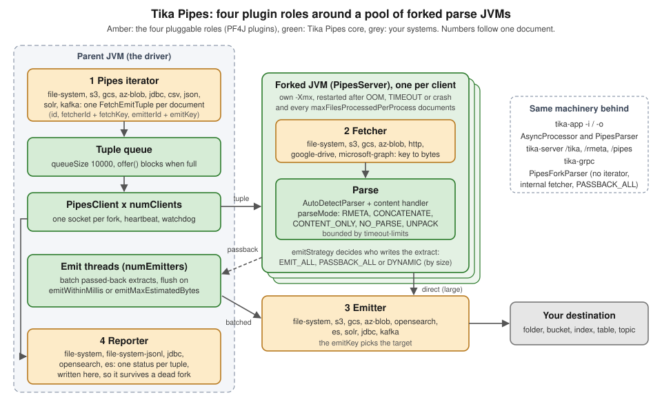

Tika Pipes
|
This content was generated with the assistance of AI and should be verified against the official documentation before being relied on in production. |
Baseline date: 2026-10-12. This page was written against Apache Tika 4.1.0 (the latest release on Maven Central on that
date) with the 3.3.x differences noted, Java 21 and later for the examples (Tika 4.x needs Java 17, 3.x needs Java 11),
Spring Boot 4.x on Spring Framework 7 for the integration pointers and the Docker image apache/tika:4.1.0-1. Tika
Pipes is the part of Tika that parses documents in separate, disposable JVMs. A pipes iterator lists the documents, a
fetcher reads each one, a forked JVM parses it, an emitter writes the result and a reporter records what happened.
In 4.x it is no longer an optional extra: tika-app’s batch mode, every parsing endpoint of tika-server, tika-grpc and the
PipesForkParser class all run on it.
This page covers the model, the tika-app quick start, the pipes section of tika-config.json, the parse modes, emit
batching and the emit strategy, the plugins and how to write one, the Java API, shared server mode and troubleshooting.
Related topics are on their own pages:
Configuration for the rest of tika-config.json and TikaLoader,
Robustness, Limits & Timeouts for the full timeout model
and the limits, Tika App (Command Line & GUI) for every tika-app
flag, Tika Server (REST API) for /pipes, /async and the
pipes-backed endpoints, Tika gRPC,
Docker & Kubernetes Deployment for sizing forks in
containers, and Security for the trust model.
How this page was checked. The Java examples were compiled and run against Tika 4.1.0 on Java 25 with
tika-pipes-fork-parser, tika-pipes-core, tika-pipes-file-system, tika-pipes-csv and
tika-parsers-standard-package (as a pom dependency) on the classpath. The tika-app runs used the 4.1.0 TikaCLI
class with its dependencies on the classpath, which is what the launcher in the zip distribution does. Every output shown
below is real output of those runs, with the working folder shown as /srv/bookshelf. Class names, method names, JSON
keys and defaults were read from the 4.1.0 sources (PipesConfig, PipesForkParser, PipesForkParserConfig,
ParseMode, EmitStrategy, PipesResult, FetchEmitTuple, TikaAsyncCLI, the file-system and Kafka plugins) and
the 4.1.x documentation. The cloud, HTTP, JDBC, Kafka, Solr, Elasticsearch and OpenSearch plugins were not run: their
configuration is quoted from the 4.1.x plugin pages and, for Kafka, cross-checked against the 4.1.0 source. The sample
files are the Bookshelf intake set used across this section: manuscript.docx, catalogue.pdf,
scanned-loan-form.pdf, publisher-email.eml (with samples.zip attached), submission.zip (a separate archive
holding a copy of the manuscript and the catalogue), novel.epub,
reviews-es.html, legacy-catalogue.txt (windows-1252) and renamed-invoice.png (a PDF with the wrong name).
<dependencies>
<!-- PipesForkParser; pulls in tika-pipes-core, the file-system plugin and the standard parsers -->
<dependency>
<groupId>org.apache.tika</groupId>
<artifactId>tika-pipes-fork-parser</artifactId>
<version>4.1.0</version>
</dependency>
<!-- PipesParser and AsyncProcessor without PipesForkParser -->
<dependency>
<groupId>org.apache.tika</groupId>
<artifactId>tika-pipes-core</artifactId>
<version>4.1.0</version>
</dependency>
<dependency>
<groupId>org.apache.tika</groupId>
<artifactId>tika-parsers-standard-package</artifactId>
<version>4.1.0</version>
<type>pom</type>
</dependency>
<!-- one jar per extra plugin, for example the CSV iterator used below -->
<dependency>
<groupId>org.apache.tika</groupId>
<artifactId>tika-pipes-csv</artifactId>
<version>4.1.0</version>
</dependency>
</dependencies>dependencies {
implementation(platform("org.apache.tika:tika-bom:4.1.0"))
implementation("org.apache.tika:tika-pipes-fork-parser")
implementation("org.apache.tika:tika-pipes-core")
implementation("org.apache.tika:tika-parsers-standard-package")
implementation("org.apache.tika:tika-pipes-csv")
}Source: Apache Tika 4.1.x, Tika Pipes from Java
(Dependencies). The tika-pipes-csv, tika-pipes-kafka, tika-pipes-s3, tika-pipes-opensearch, tika-pipes-es,
tika-pipes-solr, tika-pipes-jdbc and tika-pipes-http 4.1.0 jars were checked on Maven Central; the plugin
zips are not published there.
What Tika Pipes is
Parsing a file you did not write is risky. A crafted or merely broken PDF can make PDFBox allocate gigabytes, a ZIP can expand without end, a parser can loop forever, and a native library can crash the JVM. When the parser runs inside your application, all of that happens to your application. Tika’s security model says so plainly: calling parsers in-process opts out of the sandbox, and an out-of-memory error or an infinite loop is then the caller’s problem, not a Tika vulnerability. Process isolation is the sandbox, and Tika Pipes is how Tika provides it.
Tika Pipes splits the work between two kinds of process:
-
The parent (the driver) is your application, tika-app in batch mode, tika-server or tika-grpc. It lists the documents, hands them out, writes the results and keeps the books. It never parses.
-
The forks are child JVMs (class
PipesServer) that the parent starts, feeds over a local socket and restarts when they die. Each fork fetches one document, parses it and either sends the result back or writes it itself.
numClients sets how many forks run at once. When a fork runs out of memory, times out or crashes, the parent records the
failure for that one document, starts a fresh fork and carries on with the next document.

The four roles
A pipeline is assembled from four kinds of pluggable component. Each is named in tika-config.json and each is a PF4J
plugin, so a source or a destination Tika does not ship can be added without rebuilding Tika.
| Role | What it does | Where it runs | Configured under |
|---|---|---|---|
Pipes iterator |
Enumerates the work: walks a folder, lists a bucket, reads a CSV or a JDBC result set, drains a Kafka
topic. It produces one |
Parent, on its own thread |
|
Fetcher |
Turns a fetch key (a relative path, an object key, a URL) into the document bytes. |
Fork |
|
Emitter |
Writes the parse result to a destination keyed by the emit key: a file, an object, a search document, a row, a Kafka record. |
Fork (direct emit) or parent (after passback) |
|
Reporter |
Records the outcome ( |
Parent |
|
The FetchEmitTuple is the unit of work. It carries an id (yours, echoed in logs and reports), a FetchKey (fetcher
id plus key), an EmitKey (emitter id plus key), optional Metadata to seed the parse (a content-type hint, a resource
name, or business fields such as a shelf code), an optional per-document ParseContext (parse mode, limits, emit
strategy) and an onParseException choice (EMIT or SKIP). The iterator builds the tuples; with the Java API you can
build them yourself.
Source: Apache Tika 4.1.x, Tika Pipes (The four roles),
Pipes Iterators and the 4.1.0 FetchEmitTuple source.
Ways in
The same machinery is reachable at six levels. Pick the highest one that does the job.
| Entry point | Module / artifact | Use it when |
|---|---|---|
|
tika-app zip ( |
A folder of files to a folder of JSON, Markdown or text, from a shell or a cron job. No code. |
|
tika-app zip |
The same, with any iterator, fetcher, emitter and reporter from a config file. |
tika-server |
tika-server-standard zip, |
Other services send documents (or fetch keys) over HTTP. Parsing endpoints always run in forks in 4.x. |
tika-grpc |
|
The same over gRPC, with fetcher management calls. Trusted networks only. |
|
|
Your Java code has a file or a stream and wants text and metadata back, crash-isolated. Local files and in-memory bytes only. |
|
|
One document at a time through a full pipes config: any fetcher, any emitter, result written by the fork or passed back. |
|
|
The whole pipeline inside your JVM: queue, fork pool, emitter threads, reporters.
This is what |
PipesClient is the per-fork socket client wrapped by the last three; it is not a user-facing API.
Source: Apache Tika 4.1.x, Tika Pipes from Java and Tika Pipes (Overview).
The forked-JVM model
Each PipesClient in the parent owns one fork in the default per-client mode. The life of a fork:
-
Lazy start. No fork starts when the pipeline is built. The first request that needs a client starts its fork, which loads the config and the plugins and then reports READY. Starting a fork costs seconds (about five seconds on the test machine for the first parse, with the standard parser package); that is why a
PipesForkParseror aPipesParsermust be created once and reused. -
Request and heartbeat. The parent sends the tuple over the socket; small in-memory documents travel inside the request (up to
maxInlineBytes, 10 MB by default), anything larger is written to a file first. While parsing, the fork sends a heartbeat everyheartbeatIntervalMillis(1000 ms). If nothing arrives forsocketTimeoutMillis(60 s), the parent treats the fork as hung. -
Result. The fork returns a
PipesResultwith a status, a message and, when the result is passed back, the list ofMetadataobjects. -
Death and restart. An
OutOfMemoryError, a timeout or a native crash ends the fork. The parent recordsOOM,TIMEOUTorUNSPECIFIED_CRASHfor that document and starts a new fork on the next request. The fork is also recycled aftermaxFilesProcessedPerProcessdocuments (10 000), which bounds slow leaks in parser libraries. -
Reuse and idle shutdown. The client pool hands out the most recently used client first, so light traffic stays on warm forks. A fork that gets no work for
socketTimeoutMillisexits on its own and is restarted transparently. -
Parent death. The parent passes its process id in
TIKA_PIPES_PARENT_PID; each fork watches it and exits within milliseconds if the parent dies, so killed services do not leave orphaned forks (or orphanedtesseractprocesses).
Every fork has its own heap and its own temporary directory: a pipes-server-* subdirectory of the parent’s
java.io.tmpdir, which the parent removes when the fork goes away. The first lines a fork logs show both, plus its cache
budget (from the PipesForkParser run below, with -Xmx512m):
INFO [main] 22:47:55,959 [fork] pipesClientId=0 o.a.t.pipes.core.server.PipesServer Cache memory budget: 134217728 bytes (default, a quarter of max heap)
INFO [main] 22:47:55,966 [fork] pipesClientId=0 o.a.t.pipes.core.server.PipesServer watching parent pid 5900 for exit
INFO [main] 22:47:56,105 [fork] pipesClientId=0 o.a.t.config.loader.TikaLoader temporary files go to java.io.tmpdir=/tmp/pipes-server-0-16529982140448677553
INFO [main] 22:47:56,180 [fork] pipesClientId=0 o.a.t.pipes.core.server.PipesServer forked JVM max heap: 512 MBHow many forks, how much CPU and heap
The default numClients is derived from the host: max(1, mincores - 2) / 2, 4, so roughly half the cores,
never more than four (PipesConfig.defaultNumClients() in the source). The batch CLIs (tika-app -i/-o,
tika-async-cli) use 2 when neither -n nor a config value is given, and PipesForkParser uses 1.
Each JVM sizes its garbage collector, JIT and fork-join pools from the host CPU count, so four forks on a 16-core host
would otherwise start about 64 GC threads. Unless you pass your own, Tika injects -XX:ActiveProcessorCount (a fair
slice of the cores, never below 2, with 2 cores reserved for the parent) and -XX:MaxRAMPercentage (so the forks'
combined heap stays under the host’s memory) into each fork. The tika-app run on an 8-core laptop logged:
INFO [main] 22:50:27,910 org.apache.tika.pipes.core.async.AsyncProcessor Using per-client server mode with 2 workers
INFO [main] 22:50:27,914 org.apache.tika.pipes.core.PerClientServerManager pipes-cpu-sizing: hostCores=8, numClients=2, parentReserved=2, autoCap=slice=3, heap=MaxRAMPercentage=37The documented rule of thumb: pick the largest numClients for which twice that number plus two cores still fits on the
host; beyond it, more forks reduce throughput. Size -Xmx per fork so that three quarters of it covers the parsing
working set, because a quarter is the default in-memory cache budget (tika.pipes.cacheMemoryBudgetBytes, a fork-side
system property). The Docker & Kubernetes Deployment
page applies this to container limits.
Source: Apache Tika 4.1.x, Forked-JVM CPU and Heap Sizing and Pipes Configuration (Process Management, Embedded-object cache memory budget).
Result statuses
Every document ends in one PipesResult.RESULT_STATUS, grouped into five categories. PipesResult and
PipesForkResult have one predicate per category.
| Predicate (category) | Statuses | What to do |
|---|---|---|
|
|
Use the output. The
|
|
|
This document failed; the fork is fine. Log it and move on. |
|
|
The fork died on this document and is restarted before the next one. Record the document; do not retry it with the same settings. |
|
|
Possibly transient: a backend is down or every fork
was busy for |
|
|
The fork cannot start at all: bad config, bad class path, bad
|
Source: the 4.1.0 PipesResult source and
Tika Pipes from Java (Reading a result).
Getting started with tika-app
The quickest pipeline needs no configuration file. tika-app 4.x ships as a zip: unzip it and run the jar from inside,
because the jar is a thin launcher that loads lib/ and plugins/ from beside itself. Given an input folder and an
output folder, tika-app switches to Tika Pipes mode, walks the input recursively and writes one JSON file per document.
cd tika-app-4.1.0
java -jar tika-app-4.1.0.jar -i /srv/bookshelf/inbox -o /srv/bookshelf/extracts -n 2tika-app: running in Tika Pipes mode (async dispatch via -a/--async); use --help for options.
INFO [main] 22:50:27,910 org.apache.tika.pipes.core.async.AsyncProcessor Using per-client server mode with 2 workers
INFO [pool-2-thread-3] 22:50:35,216 org.apache.tika.pipes.core.PipesClient clientId=0: server successfully started
INFO [pool-2-thread-2] 22:50:35,382 org.apache.tika.pipes.core.PipesClient clientId=1: server successfully started
INFO [main] 22:50:37,635 tika.pipes Successfully finished processing 9 files in 9765 msThe output folder then holds catalogue.pdf.json, legacy-catalogue.txt.json, manuscript.docx.json,
novel.epub.json, publisher-email.eml.json, renamed-invoice.png.json, reviews-es.html.json,
scanned-loan-form.pdf.json and submission.zip.json. The emit key is the input’s relative path and the emitter appends .json. Each file
is the RMETA list: the container first, then one object per embedded document, with the text in tk:content as
Markdown (the 4.x default handler). For submission.zip that is three objects: the ZIP itself (whose content is the two
headings # manuscript.docx and # catalogue.pdf), then /manuscript.docx and /catalogue.pdf with their own
dc:title, dc:creator and text.
Source: Apache Tika 4.1.x, Getting Started with Tika Pipes (Quick Start with tika-app).
Pipes-mode options
These are the options of the pipes mode (TikaAsyncCLI in the 4.1.0 source). The
Tika App page covers the rules that decide when tika-app enters
this mode and the "in flux" status of the 4.x command line.
| Option | Meaning |
|---|---|
|
Input folder, walked recursively by the file-system iterator. |
|
Output folder for the file-system emitter. |
|
Number of forks (default 2 for the CLI). |
|
Heap for each fork, for example |
|
Total timeout per document (sets |
|
Content format: |
|
Parse mode |
|
Parse mode |
|
Parse mode |
|
|
|
What to do with an existing output file: |
|
A file with one path per line instead of walking the input folder. |
|
Plugins folder (defaults to |
|
A |
A Markdown copy of each document, without any metadata, is one flag away:
java -jar tika-app-4.1.0.jar -i /srv/bookshelf/inbox -o /srv/bookshelf/markdown -n 2 --handler m --content-only
cat /srv/bookshelf/markdown/submission.zip.md# manuscript.docx
The Lighthouse Keeper
Chapter one begins at dusk.
# catalogue.pdf
Bookshelf spring catalogue Forty titles from independent publishers.And -Z unpacks every attachment of the publisher’s e-mail, including the files inside the attached ZIP:
java -jar tika-app-4.1.0.jar -i /srv/bookshelf/mail -o /srv/bookshelf/unpacked -Z
find /srv/bookshelf/unpacked | sort/srv/bookshelf/unpacked
/srv/bookshelf/unpacked/publisher-email.eml-embed
/srv/bookshelf/unpacked/publisher-email.eml-embed/00000001.zip
/srv/bookshelf/unpacked/publisher-email.eml-embed/00000002.docx
/srv/bookshelf/unpacked/publisher-email.eml-embed/00000003.png
/srv/bookshelf/unpacked/publisher-email.eml-embed/00000004.pdf
/srv/bookshelf/unpacked/publisher-email.eml-embed/00000005.bin
/srv/bookshelf/unpacked/publisher-email.eml.json
/srv/bookshelf/unpacked/submission.zip-embed
/srv/bookshelf/unpacked/submission.zip-embed/00000001.docx
/srv/bookshelf/unpacked/submission.zip-embed/00000002.pdf
/srv/bookshelf/unpacked/submission.zip.jsonThe extracted files are numbered by their embedded id; the JSON beside them is the RMETA list, in which each embedded
object carries tk:embedded-id so you can map 00000002.docx back to /samples.zip/chapter-one.docx. The text note
inside the attached ZIP came out as 00000005.bin; the extension comes from the suffixStrategy of unpack-config
(see UNPACK and unpack-config).
Source: the 4.1.0 TikaAsyncCLI source and
Apache Tika 4.1.x, Parse Modes (CLI usage).
From flags to a configuration file
For anything beyond a folder walk, write a tika-config.json and run it with -c, or with -a -c when no -i and
-o are given. The next section builds the Bookshelf file. Flags still override the file where they overlap.
java -jar tika-app-4.1.0.jar -a -c /srv/bookshelf/tika-config.jsonThe pipes configuration
A pipeline is configured in the same tika-config.json that configures parsers, detectors and limits (see
Configuration). Five top-level keys belong to Pipes.
| Key | Contents |
|---|---|
|
A folder (or an array of folders) of plugin zips. Mandatory for |
|
Map of fetcher id to one component: |
|
Map of emitter id to one component, same shape. |
|
One iterator, keyed by component name, with |
|
Reporters keyed by component name; several may run together. |
|
The pipeline itself: forks, timeouts, parse mode, batching, emit strategy (table below). |
The text format comes from the top-level content-handler-factory and the per-document limits from parse-context
(timeout-limits, embedded-limits, output-limits, unpack-config, digesters), exactly as for the library.
The Bookshelf intake configuration
The Bookshelf intake service receives manuscripts, catalogues, scans and publisher e-mails into an inbox folder and
needs one JSON extract per document plus a record of anything that failed. This is the file used for the
AsyncProcessor run later on this page.
{
"plugin-roots": "/srv/bookshelf/plugins",
"content-handler-factory": {
"basic-content-handler-factory": { "type": "MARKDOWN", "writeLimit": 1000000 }
},
"fetchers": {
"inbox": {
"file-system-fetcher": { "basePath": "/srv/bookshelf/inbox", "extractFileSystemMetadata": true }
}
},
"emitters": {
"extracts": {
"file-system-emitter": {
"basePath": "/srv/bookshelf/extracts",
"fileExtension": "json",
"onExists": "REPLACE",
"prettyPrint": true
}
}
},
"pipes-iterator": {
"file-system-pipes-iterator": {
"basePath": "/srv/bookshelf/inbox",
"countTotal": true,
"fetcherId": "inbox",
"emitterId": "extracts"
}
},
"pipes-reporters": {
"file-system-reporter": { "statusFile": "/srv/bookshelf/logs/status.json", "reportUpdateMs": 1000 },
"file-system-jsonl-reporter": { "path": "/srv/bookshelf/logs/intake-audit.jsonl", "onExists": "REPLACE" }
},
"pipes": {
"numClients": 2,
"forkedJvmArgs": ["-Xmx512m"],
"maxFilesProcessedPerProcess": 1000,
"parseMode": "RMETA",
"emitIntermediateResults": true,
"emitStrategy": { "type": "DYNAMIC", "thresholdBytes": 100000 }
},
"parse-context": {
"timeout-limits": { "totalTaskTimeoutMillis": 300000, "progressTimeoutMillis": 30000 }
}
}Notes on the file:
-
inboxandextractsare instance ids you choose: letters, digits,.,_and-only. Ids beginning with two underscores are reserved for components the hosts wire up themselves (tika-server’s upload fetcher,PipesForkParser's internal fetcher, the inline-bytes fetcher) and a file that defines one fails at startup. -
file-system-fetcher,file-system-emitterandfile-system-pipes-iteratorare component names, thegetName()of each plugin factory. An unknown name fails the load and lists the names available. -
basePathon the fetcher and the emitter is the sandbox: keys that resolve outside it, including absolute paths and../traversal, are rejected. -
extractFileSystemMetadataaddsfs:created,fs:modifiedandfs:accessedto each document’s metadata; the iterator addstk:source-path. -
onParseExceptionis set per tuple (the iterators setEMIT); the 4.1.x configuration page notes that nothing reads it from thepipessection, although the key is accepted there. -
Secrets in other components (an S3 key, an Elasticsearch API key) belong in environment variables referenced as
${env:NAME}, whichTikaJsonConfigresolves at load time since 4.1.0; see Configuration for the exact syntax and its limits.
Source: Apache Tika 4.1.x, Pipes Configuration (Complete examples), Fetchers (Reserved IDs) and File System Plugin.
Every key of the pipes section
All defaults below were read from the 4.1.0 PipesConfig and EmitStrategyConfig sources. The pipes section is
shared by the parent and the forks; each ignores the keys it does not use.
| Key | Default | Meaning |
|---|---|---|
Process management |
||
|
|
Number of forks, each parsing one document at a time. |
|
|
JVM arguments for each fork: |
|
|
Java executable used to start forks. |
|
10000 |
Restart a fork after this many documents. |
|
unset |
Deprecated in 4.1 (removal planned for 5.0); set |
Timeouts (the per-document deadlines live in |
||
|
60000 |
Silence (no heartbeat, no result) after which a fork is considered hung; also the idle shutdown timer. |
|
1000 |
Heartbeat interval from the fork; must be well below |
|
60000 |
Read timeout until a new fork has completed its READY handshake (raise it when plugin loading is slow). |
|
60000 |
How long a request waits for a free fork before |
|
3600000 |
Ceiling for request-supplied timeout limits (tika-server, tika-grpc); limits in the server’s own config are trusted and not capped. |
Parse behaviour |
||
|
|
|
|
|
Accepted, but the effective value is the one on each tuple. |
|
|
|
Emit batching (used by |
||
|
1 |
Emitter threads in the parent. |
|
10000 |
Capacity of the tuple queue; |
|
10000 |
Flush the batch if nothing was emitted for this long. |
|
100000 |
Flush the batch when its estimated size reaches this. |
|
|
|
IPC payload limits |
||
|
104857600 (100 MB) |
Largest single message between parent and fork, in both directions. Give the fork about three times this as heap. |
|
10485760 (10 MB) |
Largest in-memory document sent inside the request instead of being spooled to disk.
Must fit inside |
Emit strategy |
||
|
|
|
|
100000 |
Only with |
Distributed state and shared mode |
||
|
|
Where runtime fetcher and emitter configs live: |
|
|
Backend-specific parameters, as a JSON string. |
|
|
Shared server ("YOLO") mode, see Shared server ("YOLO") mode. |
Source: Apache Tika 4.1.x, Pipes Configuration and the
4.1.0 PipesConfig source.
Parse modes
The parse mode decides how embedded documents are handled and what the emitter writes. It is set as parseMode in the
pipes section and can be overridden per document by putting a ParseMode into the tuple’s ParseContext.
| Mode | What happens | Equivalent elsewhere |
|---|---|---|
|
Recursive parse; one |
|
|
Same parse, but all text is merged into the container’s |
|
|
Parsed like |
|
|
No parser runs. Detection and any configured digester still run on the raw bytes, so you get
|
MIME triage and hash inventories |
|
Parsed like |
|
The content format is independent of the mode: the top-level content-handler-factory (TEXT, HTML, XML,
MARKDOWN, BODY, IGNORE; MARKDOWN when unset) applies to every mode that produces content. With CONTENT_ONLY set
the emitter’s fileExtension to match the handler (md, txt, html, xml). The handlers themselves are described in
Content Handlers & Output Formats and the RMETA list in
Embedded Documents & Recursive Parsing.
{
"content-handler-factory": { "basic-content-handler-factory": { "type": "MARKDOWN" } },
"emitters": {
"markdown": {
"file-system-emitter": { "basePath": "/srv/bookshelf/markdown", "fileExtension": "md" }
}
},
"pipes": { "parseMode": "CONTENT_ONLY" }
}Source: Apache Tika 4.1.x, Parse Modes and the 4.1.0
ParseMode source.
UNPACK and unpack-config
UNPACK needs only "parseMode": "UNPACK". Its options live in parse-context.unpack-config (Java: UnpackConfig):
| Key | Default | Meaning |
|---|---|---|
|
the tuple’s emitter |
Emitter id for the extracted bytes. |
|
10 GiB |
Maximum bytes extracted per container; |
|
|
Also write the container itself. |
|
|
Collect the extracted files into one ZIP at the container’s emit key plus
|
|
on for |
Metadata for every extracted file. |
|
0 |
Zero-pad embedded ids in names (8 gives |
|
|
|
|
|
How emit keys are built
( |
|
|
|
|
|
|
The tika-app -Z run above wrote one file per attachment under <emit key>-embed/; the shape you get depends on these
keys and on the CLI flags, so check the output of a test run before a downstream job relies on it.
{
"pipes": { "parseMode": "UNPACK" },
"parse-context": {
"unpack-config": { "zipEmbeddedFiles": true, "includeMetadata": true, "maxUnpackBytes": 1073741824 }
}
}Emit strategy and batching
When a fork finishes a document, someone has to call the emitter. emitStrategy decides who:
-
PASSBACK_ALL: the fork sends the metadata list back over the socket and the parent emits. The parent knows exactly what was written, and a fork crash means "not emitted". The cost is carrying every extract across the IPC link and holding it in the parent’s heap. -
EMIT_ALL: the fork emits directly and only reports success. Cheap for the parent, but the emitter’s dependencies and credentials must work inside the fork, and batching is per document. -
DYNAMIC(default): extracts abovethresholdBytes(100 000) are emitted by the fork, smaller ones are passed back and batched. The right choice forAsyncProcessorand tika-app.
Passed-back extracts wait in the parent until a batch is flushed by size (emitMaxEstimatedBytes) or by time
(emitWithinMillis), then the numEmitters threads write them. Batching matters for the search emitters, which send
bulk requests.
emitIntermediateResults decides what happens to documents whose parse did not succeed. Two runs of the Bookshelf
CSV pipeline with an absurd five-millisecond progressTimeoutMillis, so that every document timed out, showed the
difference: with false (the default) the output folder stayed empty and only the reporter knew about the three
documents; with true the emitter wrote one file per document, each containing just
[{"tk:pipes-result":"TIMEOUT"}]. Use true when the destination itself must hold a record of every attempt, and a
JSON-lines reporter otherwise.
Source: Apache Tika 4.1.x, Pipes Configuration (Emit
Strategy, Async / Emit Batching) and the 4.1.0 EmitStrategy source.
Timeouts in one paragraph
Two limits in parse-context.timeout-limits bound each document: totalTaskTimeoutMillis (end to end, default one
hour) and progressTimeoutMillis (how long the parse may go silent). When the total deadline passes, the fork first
tries to stop cleanly and return what it has as PARTIAL_TIMEOUT (also with throwOnDeadline, which only records an
exception in the container metadata); a hard
watchdog in the parent kills the fork if that does not happen within the progress window, which yields TIMEOUT. The
progress timeout produced this result in the failure run below:
Server-side progress timeout: no progress for 11ms (limit: 5ms). The complete model, the 3.x renames and the sizing
advice are on Robustness, Limits & Timeouts.
Source: Apache Tika 4.1.x, Timeouts.
Reporters
Reporters are called once per document by the parent, with the tuple, the PipesResult and the elapsed time. Because
they run in the parent, they see crashes that never reach an emitter. Every configured reporter receives every call;
the first exception any of them throws is rethrown afterwards and stops the run.
The file-system-reporter rewrites a status file every reportUpdateMs (always set it: the value is the writer
thread’s sleep, so leaving it at 0 rewrites the file in a tight loop). After the Bookshelf run:
{"started":"2026-10-12T20:50:08.097221Z","lastUpdate":"2026-10-12T20:50:16.378513Z","totalCountResult":{"totalCount":9,"status":"COMPLETED"},"statusCounts":{"PARSE_SUCCESS":9},"asyncStatus":"COMPLETED","crashMessage":""}The write is not atomic, so a watcher (a dashboard, the Tika GUI) must treat a JSON parse error as a stale read and try again on the next poll.
The file-system-jsonl-reporter (new in 4.1.0) appends one line per document and flushes it before returning, so it
survives the death of the parent too. With includes you can turn it into a crash ledger for a dead-letter process or for
tika-eval. Lines from the successful run and from the timeout run:
{"id":"manuscript.docx","status":"PARSE_SUCCESS","category":"SUCCESS","message":null,"elapsedMs":118,"timestamp":"2026-10-12T20:50:15.381116Z"}
{"id":"BK-0002","status":"TIMEOUT","category":"PROCESS_CRASH","message":"java.lang.RuntimeException: Server-side progress timeout: no progress for 9ms (limit: 5ms)\n\tat org.apache.tika.pipes.core.server.PipesServer.checkProgressTimeout(PipesServer.java:699)\n\tat org.apache.t[stack trace shortened here]","elapsedMs":5985,"timestamp":"2026-10-12T20:56:08.179382Z"}file-system-jsonl-reporter key |
Default | Meaning |
|---|---|---|
|
required |
The JSONL file; parent folders are created. |
|
|
|
|
all statuses |
Mutually exclusive sets of status names, for example
|
|
10000 |
Characters of the message (stack trace) to keep. |
The other reporters are jdbc-reporter (rows in a table), opensearch-pipes-reporter and es-pipes-reporter (status
documents in an index).
Source: Apache Tika 4.1.x, Pipes Reporters and File System Plugin (File System Reporter, File System JSONL Reporter).
Plugins
How plugins are loaded
Every fetcher, emitter, iterator and reporter in 4.x is a PF4J plugin. A plugin contributes one
factory per component, each annotated with @org.pf4j.Extension and listed in META-INF/extensions.idx. The
configuration never names a class: it names the factory’s getName(), such as file-system-fetcher.
Plugins reach a Tika host in one of two ways:
-
As zips in a plugins folder. This is the distribution layout. The tika-app and tika-server zips ship a
plugins/folder andplugin-rootspoints at it. Tika unzips each plugin into a sibling folder named after the zip and writes a.tika-extraction-completemarker. If a folder of that name exists next to its zip without the marker, Tika treats it as a failed extraction, deletes it and unzips again, so never unpack a plugin by hand next to its own zip. A folder unpacked by hand with no zip beside it is loaded as it is. In theapache/tikaDocker images extra plugins go under/opt/tika-server/plugins/(/tika-extrasis for extra jars, not plugins); see Docker & Kubernetes Deployment. -
As jars on the class path. For an embedding application, add the plugin jar (
tika-pipes-s3,tika-pipes-opensearch,tika-pipes-csvand so on) as an ordinary Maven dependency. Forks are launched with the parent’s class path, so they see the same plugins.tika-pipes-fork-parseralready depends ontika-pipes-file-system. A zip plugin of the same name takes precedence over a class-path plugin.
The plugin zips come from the distribution zips on the download page; they are not on Maven Central, the jars are.
When plugin-roots points at a folder that does not exist, PF4J logs a warning and Tika carries on with the class-path
plugins, which is what the runs on this page did:
WARN [main] 22:47:56,199 [fork] pipesClientId=0 org.pf4j.AbstractPluginManager No '/srv/bookshelf/plugins' root
INFO [main] 22:47:56,200 [fork] pipesClientId=0 org.pf4j.AbstractPluginManager No pluginsFor plugin development, -Dtika.plugin.dev.mode=true (or TIKA_PLUGIN_DEV_MODE=true) treats each plugin-roots
entry as one already exploded plugin folder, so you can point it at a module’s target/classes.
Source: Apache Tika 4.1.x, Tika Pipes from Java (Where plugins come from) and Writing a Pipes Plugin.
The plugin catalogue
| Plugin (artifact) | Component names | Fetcher | Emitter | Iterator | Reporter |
|---|---|---|---|---|---|
File system ( |
|
yes |
yes |
yes |
yes |
Amazon S3 ( |
|
yes |
yes |
yes |
- |
Google Cloud Storage ( |
|
yes |
yes |
yes |
- |
Azure Blob Storage ( |
|
yes |
yes |
yes |
- |
HTTP ( |
|
yes |
- |
- |
- |
Google Drive ( |
|
yes |
- |
- |
- |
Microsoft Graph ( |
|
yes |
- |
- |
- |
Atlassian JWT ( |
|
yes |
- |
- |
- |
JDBC ( |
|
- |
yes |
yes |
yes |
CSV ( |
|
- |
- |
yes |
- |
JSON ( |
|
- |
- |
yes |
- |
Apache Kafka ( |
|
- |
yes |
yes |
- |
Apache Solr ( |
|
- |
yes |
yes |
- |
Elasticsearch ( |
|
- |
yes |
- |
yes |
OpenSearch ( |
|
- |
yes |
- |
yes |
The component names come from the 4.1.x plugin pages and the artifact ids from the module folders of the 4.1.0 source
tree (tika-pipes/tika-pipes-plugins/tika-pipes-*). The file-system, CSV, HTTP, JDBC, Kafka, S3, Solr, Elasticsearch
and OpenSearch jars were also checked on Maven Central.
Source: Apache Tika 4.1.x, Pipes Plugins (Plugin / Interface Matrix).
File system
The file-system plugin is the reference implementation and the one most pipelines start with.
| Component | Key | Default | Meaning |
|---|---|---|---|
|
|
none |
Fetch keys are resolved under it and must stay inside it. |
|
|
Add size and |
|
|
|
Permission to run without |
|
|
|
none |
Output root; emit keys must stay inside it. |
|
none |
Appended to each output name ( |
|
|
|
|
|
|
|
Indented JSON. |
|
|
|
Write |
|
|
|
As for the fetcher. |
|
|
|
required |
Folder to walk recursively (symbolic links are not followed). |
|
|
Count the files on a second thread so progress has a total. |
basePath is the only containment. Without it there is none, and allowAbsolutePaths: true is how you assert that the
keys come from a fully trusted source. The fetcher re-checks symbolic links with toRealPath(), the emitter does not, so a
link already present under the emitter’s basePath can be written through.
Source: Apache Tika 4.1.x, File System Plugin (Security Notes).
Cloud stores: S3, Google Cloud Storage, Azure Blob
The three object-store plugins provide a fetcher, an emitter and an iterator each, with keys relative to a prefix.
For Bookshelf, scans uploaded to a bucket could be read and the extracts written back to another prefix. Credentials
are not in the file: credentialsProvider: "profile" (or the instance role) for S3, Application Default Credentials for
GCS, and an environment variable for the Azure SAS token.
{
"fetchers": {
"scans": {
"s3-fetcher": {
"bucket": "bookshelf-intake", "region": "eu-west-1", "prefix": "scans/",
"credentialsProvider": "profile", "profile": "bookshelf", "spoolToTemp": true
}
}
},
"emitters": {
"scan-extracts": {
"s3-emitter": {
"bucket": "bookshelf-extracts", "region": "eu-west-1", "prefix": "scans/", "fileExtension": "json",
"credentialsProvider": "profile", "profile": "bookshelf"
}
}
},
"pipes-iterator": {
"s3-pipes-iterator": {
"bucket": "bookshelf-intake", "region": "eu-west-1", "prefix": "scans/",
"credentialsProvider": "profile", "profile": "bookshelf",
"fetcherId": "scans", "emitterId": "scan-extracts"
}
}
}{
"fetchers": {
"archive": {
"az-blob-fetcher": {
"endpoint": "https://bookshelfarchive.blob.core.windows.net",
"container": "intake",
"sasToken": "${env:BOOKSHELF_AZ_SAS}",
"spoolToTemp": true
}
},
"gcs-intake": {
"gcs-fetcher": { "projectId": "bookshelf-prod", "bucket": "bookshelf-intake", "spoolToTemp": true }
}
}
}Not run for this page; the key names are the ones on the 4.1.x S3, Azure Blob and GCS plugin pages.
HTTP, Google Drive and Microsoft Graph
These are fetcher-only plugins; pair them with an iterator that produces the right keys (a CSV of URLs, a JSON-lines
work list, your own code) and any emitter. For http-fetcher the fetch key is the URL itself; it supports basic and JWT
authentication, connection and timeout settings, extra headers and maxSpoolSize, and since 4.0 it verifies TLS
certificates and host names by default (verifySsl: false opts out, which you should not do outside a test).
{
"fetchers": {
"publisher-portal": {
"http-fetcher": {
"userName": "bookshelf-intake",
"password": "${env:PUBLISHER_PORTAL_PASSWORD}",
"authScheme": "basic",
"connectTimeoutMillis": 30000,
"requestTimeoutMillis": 60000,
"overallTimeoutMillis": 120000,
"maxRedirects": 5
}
},
"sharepoint": {
"microsoft-graph-fetcher": {
"clientSecretCredentialsConfig": {
"tenantId": "${env:AZURE_TENANT_ID}",
"clientId": "${env:AZURE_CLIENT_ID}",
"clientSecret": "${env:AZURE_CLIENT_SECRET}"
},
"scopes": ["https://graph.microsoft.com/.default"],
"spoolToTemp": true
}
}
}
}google-drive-fetcher takes a base64 service-account key (serviceAccountKeyBase64), subjectUser, scopes and
applicationName; feed the key from an environment variable as well. An HTTP fetcher that accepts URLs from callers
(tika-server /pipes, tika-grpc) is a server-side request forgery risk; see the
Security page.
Work lists: CSV, JSON lines and JDBC
When the list of documents comes from a system rather than a folder, use a work-list iterator. The Bookshelf intake desk exports the day’s submissions as a CSV, with business fields that should end up in each extract:
doc_id,source_path,output_path,shelf,submitted_by
BK-0001,manuscript.docx,2026/BK-0001,fiction,ana.torres
BK-0002,catalogue.pdf,2026/BK-0002,catalogues,press
BK-0003,scanned-loan-form.pdf,2026/BK-0003,loans,deskReplace the iterator in the Bookshelf file with:
{
"pipes-iterator": {
"csv-pipes-iterator": {
"csvPath": "/srv/bookshelf/intake.csv",
"idColumn": "doc_id",
"fetchKeyColumn": "source_path",
"emitKeyColumn": "output_path",
"fetcherId": "inbox",
"emitterId": "extracts"
}
}
}Run with the Intake program of the Java section (and tika-pipes-csv on the class path), the pipeline wrote
2026/BK-0001.json, 2026/BK-0002.json and 2026/BK-0003.json, the ledger used the CSV ids
({"id":"BK-0001","status":"PARSE_SUCCESS",...}), and every column not consumed as a key became metadata: the
manuscript’s extract carried "shelf": "fiction" and "submitted_by": "ana.torres" next to
"dc:title": "The Lighthouse Keeper". The CSV must be UTF-8 with a header row (Excel format); a column whose header
collides with a reserved Tika key is skipped with a log line.
The json-pipes-iterator reads a JSON-lines file in which each line is a whole serialized FetchEmitTuple (id,
fetcher, fetchKey, emitter, emitKey, and optionally metadata, parse-context, onParseException, preset),
so each line names its own fetcher and emitter; unknown fields are rejected. The jdbc-pipes-iterator walks a SELECT
(select, idColumn, fetchKeyColumn, emitKeyColumn, fetchSize), and the jdbc-emitter writes chosen metadata
keys into a table through an insert template with typed keys.
Source: Apache Tika 4.1.x, CSV Plugin, JSON Plugin and JDBC Plugin.
Search emitters: Solr, Elasticsearch and OpenSearch
The three search emitters send bulk requests, so they benefit from passback batching. Each takes the index or collection
URL, an idField (the emit key becomes the document id), an attachmentStrategy for embedded documents
(the 4.1.x examples use PARENT_CHILD) and an updateStrategy (ADD for Solr, OVERWRITE for the other two). The Elasticsearch and
OpenSearch emitters also take a chunkStrategy for tk:chunks.
{
"emitters": {
"catalogue-index": {
"es-emitter": {
"esUrl": "https://search.bookshelf.internal:9200/bookshelf-docs",
"idField": "doc_id",
"attachmentStrategy": "PARENT_CHILD",
"updateStrategy": "OVERWRITE",
"apiKey": "${env:BOOKSHELF_ES_API_KEY}",
"httpClientConfig": { "connectionTimeoutMillis": 10000, "socketTimeoutMillis": 60000 }
}
},
"solr": {
"solr-emitter": {
"solrCollection": "bookshelf",
"solrUrls": ["http://solr1.bookshelf.internal:8983/solr"],
"idField": "id",
"commitWithin": 1000,
"attachmentStrategy": "PARENT_CHILD",
"updateStrategy": "ADD"
}
}
}
}Restrict what reaches the index with a metadata filter (see Metadata) instead of
indexing every key Tika produces. The solr-pipes-iterator reads documents back out of a collection (for example
everything with status:NEEDS_REPARSE) to re-parse them. SolrJ moved to 10.0 in Tika 4.0, so the Solr plugin no longer
supports Solr 8. For the index side see Solr indexing & updates and
Elasticsearch ingest pipelines. Not run for this page.
Kafka
The Kafka plugin has two halves with different standing.
The kafka-emitter is a plain producer and a good fit for streaming extracts to downstream indexers. Its keys map onto
the standard producer settings (topic, bootstrapServers, acks, lingerMs, batchSize, compressionType,
enableIdempotence, maxRequestSize, deliveryTimeoutMs, transactionalId, and so on); Tika sets no values of its
own, so an absent key means the Kafka client default. Read from the 4.1.0 KafkaEmitter source: the emitter sends one
record per Metadata object, so an RMETA extract of publisher-email.eml becomes six records with the same key (the
emit key). The value is a JSON object of the metadata fields, and only the first value of a multi-valued key is kept
(with a warning in the log). Use CONCATENATE when downstream consumers expect one record per document.
{
"emitters": {
"extract-topic": {
"kafka-emitter": {
"topic": "bookshelf.extracts",
"bootstrapServers": "kafka1.bookshelf.internal:9092,kafka2.bookshelf.internal:9092",
"acks": "all",
"enableIdempotence": true,
"compressionType": "lz4",
"maxRequestSize": 1048576,
"clientId": "bookshelf-tika-pipes"
}
}
},
"pipes": { "parseMode": "CONCATENATE" }
}The kafka-pipes-iterator is documented as a worked example rather than a supported production integration. In
4.1.0 it uses each record’s key as the tuple id, the fetch key and the emit key (the record value is not read). It
leaves enable.auto.commit at Kafka’s default, so offsets are committed when records are polled, before Tika has parsed
or emitted them: a crash in between loses those documents, which is at-most-once delivery. It drains the topic and
stops after drainIdleMs (1000 ms) of quiet, so it suits a periodic batch run, not a long-running consumer. And a slow
document holds up its partition. For long-running or OCR-heavy work, write your own consumer that commits after a
successful result and drives tika-server, tika-grpc or PipesParser (see the AsyncProcessor section), and keep the
Kafka emitter for the results.
The Kafka side of these trade-offs is covered in Kafka Consumers, Kafka Producers, Delivery Guarantees and Kafka Reliability and Exactly-Once Semantics. Not run for this page.
Source: Apache Tika 4.1.x, Apache Kafka Plugin and the
4.1.0 KafkaEmitter and KafkaPipesIterator sources.
Writing a plugin
A plugin is three kinds of class, one plugin.properties and a zip with a fixed layout. Using a Bookshelf fetcher for a
supplier portal as the example:
-
A
org.pf4j.Pluginsubclass with a(PluginWrapper)constructor, one per zip. -
One factory per component, annotated with
@Extension(on the factory, never on the fetcher) and implementing the matching interface fromorg.apache.tika.pipes.api:fetcher.FetcherFactory,emitter.EmitterFactory,pipesiterator.PipesIteratorFactoryorreporter.PipesReporterFactory.getName()is the name users write intika-config.jsonand must be unique among all loaded plugins. -
The component itself, extending
org.apache.tika.plugins.AbstractTikaExtension(orPipesIteratorBasefromtika-pipes-iterator-commons, whose only abstract method isenqueue(), orPipesReporterBase). Its configuration arrives as a JSON string inExtensionConfig.json(). Fetchers and emitters must be thread-safe: one instance serves every concurrent request for its id.
package org.bookshelf.tika;
import java.io.IOException;
import org.apache.tika.exception.TikaConfigException;
import org.apache.tika.pipes.api.fetcher.Fetcher;
import org.apache.tika.pipes.api.fetcher.FetcherFactory;
import org.apache.tika.plugins.ExtensionConfig;
import org.pf4j.Extension;
@Extension
public class SupplierPortalFetcherFactory implements FetcherFactory {
@Override
public String getName() {
return "bookshelf-supplier-fetcher";
}
@Override
public Fetcher buildExtension(ExtensionConfig extensionConfig)
throws IOException, TikaConfigException {
return new SupplierPortalFetcher(extensionConfig);
}
@Override
public Class<?> getConfigClass() {
return SupplierPortalFetcherConfig.class;
}
}plugin.id=bookshelf-supplier-plugin
plugin.class=org.bookshelf.tika.BookshelfPipesPlugin
plugin.version=${project.version}
plugin.provider=Bookshelf
plugin.description=Fetches publisher files from the Bookshelf supplier portalThe zip holds plugin.properties at its root, classes/META-INF/extensions.idx, and lib/ with the plugin’s own jar
and its runtime dependencies. Everything on the boundary between host and plugin is declared provided and must not be
in lib/: pf4j, tika-core, tika-plugins-core, tika-pipes-api, tika-serialization, the logging API and,
unless you deliberately bundle your own, Jackson. A plugin that ships its own tika-core loads cleanly and then finds
no extensions or fails with a ClassCastException, because its FetcherFactory is a different class from the host’s.
Follow the logging convention of the bundled plugins: literal fetch and emit keys only at TRACE.
The factory above was written from the 4.1.x guide and not compiled for this page. The parser-side extension points are on Extending Tika.
Source: Apache Tika 4.1.x, Writing a Pipes Plugin and tika-pipes-file-system (the reference plugin).
The Java API
PipesForkParser: crash-isolated parsing for your own code
PipesForkParser (module tika-pipes-fork-parser) is the 4.x replacement for the removed ForkParser. It is the
simplest way to give an application process isolation: you pass a Path or a TikaInputStream, a fork parses it and
the text and metadata come back in a PipesForkResult. Internally it writes a temporary tika-config.json with an
internal file-system fetcher (UUID-named, allowAbsolutePaths: true), the PASSBACK_ALL emit strategy and your
settings, and loads a PipesParser from it.
The Bookshelf intake check below parses every file in the inbox in Markdown and RMETA mode, lists embedded documents and handles the three outcome classes. It also parses a stream with no file behind it, which travels inline to the fork.
package org.bookshelf.intake;
import java.io.InputStream;
import java.nio.file.Files;
import java.nio.file.Path;
import java.util.List;
import java.util.stream.Stream;
import org.apache.tika.config.TimeoutLimits;
import org.apache.tika.io.TikaInputStream;
import org.apache.tika.metadata.HttpHeaders;
import org.apache.tika.metadata.Metadata;
import org.apache.tika.metadata.TikaCoreProperties;
import org.apache.tika.pipes.api.ParseMode;
import org.apache.tika.pipes.fork.PipesForkParser;
import org.apache.tika.pipes.fork.PipesForkParserConfig;
import org.apache.tika.pipes.fork.PipesForkParserException;
import org.apache.tika.pipes.fork.PipesForkResult;
import org.apache.tika.sax.BasicContentHandlerFactory;
public class IntakeFork {
public static void main(String[] args) throws Exception {
Path inbox = Path.of(args.length > 0 ? args[0] : "/srv/bookshelf/inbox");
PipesForkParserConfig config = new PipesForkParserConfig()
.setHandlerType(BasicContentHandlerFactory.HANDLER_TYPE.MARKDOWN)
.setParseMode(ParseMode.RMETA)
.setTimeoutLimits(new TimeoutLimits(
TimeoutLimits.DEFAULT_TOTAL_TASK_TIMEOUT_MILLIS, 30_000))
.addJvmArg("-Xmx512m")
.setMaxFilesPerProcess(500)
.setNumClients(2);
List<Path> files;
try (Stream<Path> s = Files.list(inbox)) {
files = s.filter(Files::isRegularFile).sorted().toList();
}
// create once, reuse: each instance owns a pool of forked JVMs
try (PipesForkParser parser = new PipesForkParser(config)) {
for (Path file : files) {
report(file.getFileName().toString(), parser.parse(file));
}
// a stream without a file behind it: up to maxInlineBytes travels inside the request
try (InputStream in = Files.newInputStream(inbox.resolve("catalogue.pdf"));
TikaInputStream tis = TikaInputStream.get(in)) {
Metadata hint = new Metadata();
hint.set(TikaCoreProperties.RESOURCE_NAME_KEY, "catalogue.pdf");
report("stream:catalogue.pdf", parser.parse(tis, hint));
}
} catch (PipesForkParserException e) {
// configuration and initialization problems are thrown, not returned
System.err.println("configuration problem (" + e.getStatus() + "): " + e.getMessage());
}
}
static void report(String name, PipesForkResult result) {
if (result.isSuccess()) {
List<Metadata> list = result.getMetadataList(); // container first
String text = result.getContent(); // container text only
System.out.printf("%-24s %-14s docs=%d type=%s chars=%d%n", name, result.getStatus(),
list.size(), result.getMetadata().get(HttpHeaders.CONTENT_TYPE),
text == null ? 0 : text.length());
for (int i = 1; i < list.size(); i++) {
Metadata m = list.get(i);
System.out.printf("%-24s embedded %s %s%s%n", "",
m.get(TikaCoreProperties.EMBEDDED_RESOURCE_PATH),
m.get(HttpHeaders.CONTENT_TYPE),
m.get(TikaCoreProperties.EMBEDDED_EXCEPTION) == null ? "" : " EXCEPTION");
}
} else if (result.isProcessCrash()) {
// OOM, TIMEOUT or UNSPECIFIED_CRASH: the fork restarts before the next parse
System.out.printf("%-24s CRASH %s%n", name, result.getStatus());
} else {
// fetch or parse problem with this document only
System.out.printf("%-24s FAILED %s %s%n", name, result.getStatus(), result.getMessage());
}
}
}catalogue.pdf PARSE_SUCCESS docs=1 type=application/pdf chars=89
legacy-catalogue.txt PARSE_SUCCESS docs=1 type=text/plain; charset=windows-1252 chars=152
manuscript.docx PARSE_SUCCESS docs=1 type=application/vnd.openxmlformats-officedocument.wordprocessingml.document chars=76
novel.epub PARSE_SUCCESS docs=1 type=application/epub+zip chars=59
publisher-email.eml PARSE_SUCCESS docs=6 type=message/rfc822 chars=112
embedded /samples.zip/chapter-one.docx/figure1.png image/png
embedded /samples.zip/chapter-one.docx application/vnd.openxmlformats-officedocument.wordprocessingml.document
embedded /samples.zip/catalogue.pdf application/pdf
embedded /samples.zip/cover-note.txt text/plain; charset=windows-1252
embedded /samples.zip application/zip
renamed-invoice.png PARSE_SUCCESS docs=1 type=application/pdf chars=89
reviews-es.html PARSE_SUCCESS docs=1 type=text/html; charset=UTF-8 chars=420
scanned-loan-form.pdf PARSE_SUCCESS docs=1 type=application/pdf chars=131
submission.zip PARSE_SUCCESS docs=3 type=application/zip chars=35
embedded /manuscript.docx application/vnd.openxmlformats-officedocument.wordprocessingml.document
embedded /catalogue.pdf application/pdf
stream:catalogue.pdf PARSE_SUCCESS docs=1 type=application/pdf chars=89The whole run took about 7 seconds of wall time, most of it the start of the first fork. renamed-invoice.png was
detected as the PDF it is. In the RMETA list the embedded documents come after the container, deepest first (the image
inside the attached manuscript precedes the manuscript itself). getContent() is only the container’s text: for the
e-mail, 112 characters out of a much larger total, so iterate getMetadataList() and read
TikaCoreProperties.TIKA_CONTENT from each element when you need everything.
Source: PipesForkParserExample.java and Apache Tika 4.1.x, Tika Pipes from Java (PipesForkParser).
PipesForkParserConfig
| Method | Default | Effect |
|---|---|---|
|
|
Output format.
|
|
-1 |
Characters of content per document. |
|
|
Any of the five modes; |
|
unset |
Embedded-document limits. |
|
config default |
|
|
none |
Fork JVM arguments ( |
|
|
Java executable for the forks (honoured since 4.1.0). |
|
10000 |
Recycle the fork after this many documents. |
|
1 |
Forks for concurrent |
|
|
Plugin zips; harmless warning when absent and the plugins are on the class path. |
|
none |
A |
|
|
Stored in the config object, but not used by the 4.1.0 config generation: the
internal fetcher always gets a generated |
|
- |
The underlying |
Source: the 4.1.0 PipesForkParserConfig source and
PipesForkParserConfig Javadoc.
Failures, observed
Two deliberate failures show the split between results and exceptions. A five-millisecond progress timeout makes every
parse a process crash, which parse returns; a non-existent javaPath makes the fork impossible to start, which parse
throws as a PipesForkParserException:
PipesForkParserConfig tight = new PipesForkParserConfig()
.setTimeoutLimits(new TimeoutLimits(5, 5));
try (PipesForkParser parser = new PipesForkParser(tight)) {
PipesForkResult r = parser.parse(Path.of("/srv/bookshelf/inbox/scanned-loan-form.pdf"));
System.out.println(r.getStatus() + " crash=" + r.isProcessCrash() + " msg=" + r.getMessage().lines().findFirst().orElse(""));
}
PipesForkParserConfig badJava = new PipesForkParserConfig().setJavaPath("/opt/no-such-jdk/bin/java");
try (PipesForkParser parser = new PipesForkParser(badJava)) {
parser.parse(Path.of("/srv/bookshelf/inbox/catalogue.pdf"));
} catch (PipesForkParserException e) {
System.out.println(e.getStatus() + " initFailure=" + e.isInitializationFailure());
}TIMEOUT crash=true msg=java.lang.RuntimeException: Server-side progress timeout: no progress for 11ms (limit: 5ms)
FAILED_TO_INITIALIZE initFailure=trueThe second case also logged ERROR clientId=0: failed to start server with the underlying
Cannot run program "/opt/no-such-jdk/bin/java". With a 300 ms limit instead of 5 ms, both documents parsed: the
fork’s start-up does not count against the per-document deadline.
PipesForkParser throws PipesForkParserException for FAILED_TO_INITIALIZE, the fetcher and emitter initialization
failures, FETCHER_NOT_FOUND, EMITTER_NOT_FOUND and CLIENT_UNAVAILABLE_WITHIN_MS, and returns everything else.
Source: the 4.1.0 PipesForkParser source (checkForApplicationError).
PipesParser: one document, any fetcher, any emitter
PipesParser (in tika-pipes-core) takes a FetchEmitTuple and returns a PipesResult, with everything else coming
from a config file. The same code reads from a folder today and from a bucket tomorrow. It is thread-safe: each call
borrows one of the numClients forks and waits up to maxWaitForClientMillis for one to free up.
Against the Bookshelf file (fetcher inbox, emitter extracts), this program writes one extract from the fork, gets
one back instead, and asks for a file that is not there:
package org.bookshelf.intake;
import java.nio.file.Path;
import org.apache.tika.metadata.Metadata;
import org.apache.tika.metadata.TikaCoreProperties;
import org.apache.tika.parser.ParseContext;
import org.apache.tika.pipes.api.FetchEmitTuple;
import org.apache.tika.pipes.api.PipesResult;
import org.apache.tika.pipes.api.emitter.EmitKey;
import org.apache.tika.pipes.api.fetcher.FetchKey;
import org.apache.tika.pipes.core.EmitStrategy;
import org.apache.tika.pipes.core.EmitStrategyConfig;
import org.apache.tika.pipes.core.PipesParser;
public class OneDoc {
public static void main(String[] args) throws Exception {
try (PipesParser parser = PipesParser.load(Path.of("/srv/bookshelf/tika-config.json"))) {
// 1. the fork writes the extract itself
ParseContext emitAll = new ParseContext();
emitAll.set(EmitStrategyConfig.class, new EmitStrategyConfig(EmitStrategy.EMIT_ALL));
PipesResult written = parser.parse(new FetchEmitTuple("manuscript-001",
new FetchKey("inbox", "manuscript.docx"),
new EmitKey("extracts", "single/manuscript"), new Metadata(), emitAll));
System.out.println("emit: " + written.status());
// 2. the result comes back instead
ParseContext passback = new ParseContext();
passback.set(EmitStrategyConfig.class, new EmitStrategyConfig(EmitStrategy.PASSBACK_ALL));
PipesResult returned = parser.parse(new FetchEmitTuple("email-001",
new FetchKey("inbox", "publisher-email.eml"), EmitKey.NO_EMIT,
new Metadata(), passback));
System.out.println("passback: " + returned.status());
if (returned.isSuccess() && returned.emitData() != null) {
for (Metadata m : returned.emitData().getMetadataList()) {
System.out.println(" " + m.get(TikaCoreProperties.EMBEDDED_RESOURCE_PATH)
+ " | " + m.get("Content-Type"));
}
}
// 3. a key that is not there
PipesResult missing = parser.parse(new FetchEmitTuple("missing-001",
new FetchKey("inbox", "no-such-file.pdf"), new EmitKey("extracts", "missing")));
System.out.println("missing: " + missing.status() + " taskException=" + missing.isTaskException());
}
}
}emit: EMIT_SUCCESS
passback: PARSE_SUCCESS
null | message/rfc822
/samples.zip/chapter-one.docx/figure1.png | image/png
/samples.zip/chapter-one.docx | application/vnd.openxmlformats-officedocument.wordprocessingml.document
/samples.zip/catalogue.pdf | application/pdf
/samples.zip/cover-note.txt | text/plain; charset=windows-1252
/samples.zip | application/zip
missing: FETCH_EXCEPTION taskException=trueThe first call wrote /srv/bookshelf/extracts/single/manuscript.json (the emitter appended .json), which begins:
[ {
"Content-Length" : "1418",
"Content-Type" : "application/vnd.openxmlformats-officedocument.wordprocessingml.document",
"dc:creator" : "Ana Torres",
"dc:title" : "The Lighthouse Keeper",
"fs:created" : "2026-10-12T20:47:24Z",
"fs:modified" : "2026-10-12T20:47:24Z",
"tk:content-handler-type" : "MARKDOWN",
"tk:parse-time-millis" : "38",
"tk:resource-name" : "manuscript.docx",
"tk:source-path" : "manuscript.docx",
"tk:content" : "The Lighthouse Keeper \n\nThe Lighthouse Keeper\n\nChapter one begins at dusk.\n"
} ](shortened: the real file also lists fs:accessed, the detection keys, tk:parsed-by and the ZIP detector flag.) A
passed-back result under PipesParser is yours to write: there is no emitter thread behind it.
Source: Apache Tika 4.1.x, Tika Pipes from Java (PipesParser, Getting the result back instead).
AsyncProcessor: the whole pipeline
AsyncProcessor adds the queue, the worker threads that feed the forks, the emitter threads and the reporters. You
offer tuples; it does the rest. With an iterator in the config, the tuples come from the config too:
package org.bookshelf.intake;
import java.nio.file.Path;
import java.util.concurrent.TimeoutException;
import org.apache.tika.config.loader.TikaJsonConfig;
import org.apache.tika.pipes.api.FetchEmitTuple;
import org.apache.tika.pipes.api.pipesiterator.PipesIterator;
import org.apache.tika.pipes.core.async.AsyncProcessor;
import org.apache.tika.pipes.core.pipesiterator.PipesIteratorManager;
import org.apache.tika.plugins.TikaPluginManager;
public class Intake {
public static void main(String[] args) throws Exception {
Path configPath = Path.of(args[0]);
TikaJsonConfig jsonConfig = TikaJsonConfig.load(configPath);
PipesIterator iterator = PipesIteratorManager
.load(TikaPluginManager.load(jsonConfig), jsonConfig)
.orElseThrow(() -> new IllegalStateException("no pipes-iterator configured"));
long start = System.currentTimeMillis();
try (AsyncProcessor processor = AsyncProcessor.load(configPath, iterator)) {
for (FetchEmitTuple tuple : iterator) {
if (!processor.offer(tuple, 120_000)) {
throw new TimeoutException("queue stayed full for two minutes");
}
}
processor.finished(); // no more input
while (processor.checkActive()) { // rethrows the first worker or emitter failure
Thread.sleep(500);
}
System.out.println("processed " + processor.getTotalProcessed() + " documents in "
+ (System.currentTimeMillis() - start) + " ms");
}
}
}java -cp "intake.jar:lib/*" org.bookshelf.intake.Intake /srv/bookshelf/tika-config.jsonprocessed 9 documents in 8313 msThe extracts folder then held the nine .json files, status.json showed "statusCounts":{"PARSE_SUCCESS":9} and the
JSONL ledger had nine lines (shown in the Reporters section). Swapping the iterator for the CSV one produced the
2026/BK-000n.json extracts described there.
An iterator is optional. Pass null as the second argument of AsyncProcessor.load and offer tuples you build
yourself, from a Kafka consumer, a database cursor or an upload queue. offer blocks while the queue (queueSize) is
full and returns false if it never drains. Per-document outcomes go to the reporters, not back to the caller;
checkActive only surfaces failures that stop the pipeline. Because AsyncProcessor emits passed-back extracts itself,
the default DYNAMIC strategy is the right one here.
Source: Apache Tika 4.1.x, Tika Pipes from Java (AsyncProcessor: the whole pipeline).
Lifecycle
-
PipesForkParser,PipesParserandAsyncProcessorareCloseable. Closing kills the forks and deletes the temporary files the parent created for them (forPipesForkParser, the generated config file). Use try-with-resources, or a container-managed bean with a destroy method. -
Create each once and share it; they are thread-safe. A new instance per document starts a JVM per document.
-
Close every
TikaInputStreamyou pass in: a stream without a file is spooled to a temporary file when it is larger thanmaxInlineBytes, and that file is removed only on close. Preferparse(Path)when the document is already on disk; random-access formats (ZIP, OLE2, PDF) are then read in place. -
The forks inherit the parent’s class path. A dependency you add to the application is visible to the forks; a
-cpoverride inforkedJvmArgsthat points at a different Tika version is unsupported (the IPC format is same-version only).
The Spring Boot Integration page of this section covers
PipesForkParser as a Spring bean with a matching shutdown.
Shared server ("YOLO") mode
By default every client has its own fork, so a crash can only take down the document that caused it.
"useSharedServer": true connects all clients to one forked JVM with several connection handlers. That saves the
memory of numClients - 1 JVMs and is often faster: one warm JIT profile and one larger heap. The 4.1.x documentation
reports one benchmark in which shared mode came within about 5 to 15 percent of in-process parsing while per-client
mode was 20 to 35 percent slower.
{
"pipes": {
"numClients": 4,
"useSharedServer": true,
"forkedJvmArgs": ["-Xmx4g"],
"emitStrategy": { "type": "PASSBACK_ALL" }
},
"parse-context": {
"timeout-limits": { "progressTimeoutMillis": 60000 }
}
}The price is isolation, which is the reason Tika Pipes exists:
-
Any OOM, timeout or crash kills the shared process and every in-flight document, not only the bad one. The server is restarted and the clients reconnect, but retrying the lost requests is up to you.
-
With
EMIT_ALL, orDYNAMICfor large extracts, a client whose document was emitted just before another document crashed the process sees only "crash" and cannot tell whether its extract reached the destination.PASSBACK_ALL, as above, removes that ambiguity. -
All parses share one heap, so size it for
numClientstimes the worst document, plus headroom. -
Parsers run concurrently in one JVM, which can expose thread-safety bugs that per-client mode hides.
The project marks it experimental and not recommended for production. Consider it only for well-behaved corpora under hard memory limits, after testing with your own documents. Not run for this page.
Troubleshooting and logging
Telling fork lines from parent lines
Forks inherit the parent’s stdout and stderr, which suits containers: everything reaches the container log. The bundled
fork logging configuration (pipes-fork-server-default-log4j2.xml) marks fork lines with [fork], and both sides
print pipesClientId=N, so you can follow one fork across the boundary:
INFO [main] 22:47:56,180 [fork] pipesClientId=0 org.apache.tika.pipes.core.server.PipesServer forked JVM max heap: 512 MB
INFO [pool-2-thread-3] 22:50:35,216 org.apache.tika.pipes.core.PipesClient clientId=0: server successfully startedThe 4.1.0 forks in these runs also logged one WORKER_TIMING line per document at INFO, with the deserialization,
fetch, parse and emit times in microseconds and the tuple id. For PipesForkParser the id is the absolute file path, so
treat these lines as containing file names:
INFO [main] 22:48:01,909 [fork] pipesClientId=0 org.apache.tika.pipes.timing.worker WORKER_TIMING id=/srv/bookshelf/inbox/submission.zip req_deser_us=535 ctx_merge_us=495 intermediate_wait_us=2540 handoff_us=472 fetch_us=997 parse_us=14872 emit_us=9 worker_wall_us=15896 intermediate_us=130 resp_ser_us=362 resp_write_us=138 resp_ack_us=1120 resp_bytes=3152Knobs
| Setting | Read by | Effect |
|---|---|---|
|
parent |
Drop all fork stdout and stderr (used for the runs on this page to keep the console readable). Default: inherit. |
|
fork |
Your own fork logging config instead of the bundled one. |
|
fork |
In-memory cache budget per fork; 0 or less disables it. |
|
parent (and inherited) |
Where spooled input, unpacked files and fork folders go. Never on tmpfs. |
|
tika-app |
Root logger at DEBUG for one run. |
|
fork (set automatically) |
Parent-death watch. |
A property that "does nothing" is usually set on the wrong JVM: fork-side properties belong in forkedJvmArgs, and set
on the parent (java -D..., MAVEN_OPTS, Surefire argLine) they are silently ignored by the forks.
Logging levels follow a convention: ERROR and WARN never contain literal fetch or emit keys (documents are identified by
the tuple id), INFO is lifecycle, DEBUG is per-document progress and counts, TRACE adds the literal keys (paths, URLs,
object keys). HTTP fetchers may still include response bytes in exception messages, limited by maxErrMsgSize.
Common problems
| Symptom | Cause and fix |
|---|---|
|
The fork died during start-up: a bad |
|
|
A JVM crash log in the parent’s output |
A native crash in a fork. Tika points |
|
|
Unknown component name at load |
Typo, or the plugin is not loaded. The error lists the names that are available. |
|
Every fork busy for |
|
The result or request exceeded
|
Crashed documents missing from the output |
Expected with |
Leftover |
The whole process group was killed at once (container stop,
SIGKILL), or a worker died mid-write with |
Host runs out of memory while spooling |
|
Source: Apache Tika 4.1.x, Pipes Troubleshooting and Pipes Configuration (Where temporary files go).
Memory, performance and robustness
-
Every fork is a JVM. Memory is roughly
numClientstimes (fork heap plus JVM overhead) plus the parent. Start-up takes seconds, so short-lived pipelines and per-request construction waste most of their time starting forks. -
Throughput scales with forks until the CPU rule (two cores per fork plus two for the parent) is exceeded. Shared mode trades isolation for throughput and memory.
-
IPC cost.
PASSBACK_ALLand small-extract passback serialize every metadata list across the socket and hold it in the parent;EMIT_ALLavoids that but loses batching. Large documents are whatDYNAMICexists for. -
Disk. Inputs larger than
maxInlineBytes, streams from remote fetchers withspoolToTemp, unpacked embedded files and random-access parsers all use the temporary folder. 4.1.0 reduced spooling noticeably; budget the volume anyway. -
Bounding the work. Write limits, embedded limits,
maxUnpackBytesand the timeouts belong inparse-context(see Robustness, Limits & Timeouts). The fork protects the parent; the limits protect the fork’s time and your destination. -
Leaks.
maxFilesProcessedPerProcessrecycles forks; lower it for parsers known to leak (OCR, some image libraries).
Pitfalls and security
-
Pipes is the sandbox, not an authentication layer. tika-server and tika-grpc run every parse in forks, but they are not security boundaries: whoever can reach
/pipes,/asyncor the gRPC fetcher calls can make the server read any path or URL its fetchers allow. Keep them on trusted networks, behind authentication, withallowPipesoff unless you need it. See Security and Tika Server. -
basePathis the only containment for the file-system components. Never combineallowAbsolutePaths: truewith keys from callers. Do not rely on symbolic-link containment on the emitter side. -
Credentials go in environment variables (
${env:NAME}) or the cloud SDKs' own credential chains, never in the file. The forks inherit the parent’s environment. -
Do not retry crashes blindly. A document that produced
OOMorTIMEOUTwill usually do so again; route it to a dead-letter list (the JSONL ledger) and retry it with different limits, if at all. -
Defaults differ by entry point. Markdown for tika-app and the pipes config, plain text for
PipesForkParser;numClientsfrom the CPU count, 2 for the CLIs, 1 forPipesForkParser. Set what you depend on. -
getContent()is the container only in RMETA mode. Embedded text is in the other list elements. -
Kafka iterator delivery is at most once. Use your own consumer when a lost document matters.
-
Fork-side settings on the parent are ignored. Heap, cache budget and fork logging go into
forkedJvmArgs. -
Keep parent and forks on the same Tika version. The IPC protocol is internal and same-version only.
Source: Apache Tika Security Model and Apache Tika 4.1.x, Security.
From 1.x to 4.x
Tika in Action (2011, Tika 1.x) handles robustness in chapter 9 with the ForkParser, which streamed SAX events
from a child process, and with careful thread and memory management in the caller. Batch processing meant your own
loops, or later the tika-batch module behind tika-app’s -bc batch mode.
| Version | What changed for Pipes |
|---|---|
1.x (the book) |
|
2.0 (July 2021) |
Tika Pipes arrives: |
3.x |
Same model on Java 11, configured by class name in |
4.0 (August 2026) |
Pipes becomes the engine of every service: tika-server’s parsing endpoints and tika-grpc run in
forks. JSON configuration; components become PF4J plugins in |
4.1 (September 2026) |
|
A 3.x pipeline looked like this. It is shown only to recognise old files: the element names (fetchers/fetcher,
emitters/emitter, pipesIterator, pipes, async) were read from the 3.3.2 sources, the rest follows the 3.x
conventions, and it was not run.
<properties>
<pipes>
<params>
<numClients>2</numClients>
<forkedJvmArgs><arg>-Xmx512m</arg></forkedJvmArgs>
</params>
</pipes>
<fetchers>
<fetcher class="org.apache.tika.pipes.fetcher.fs.FileSystemFetcher">
<name>inbox</name>
<basePath>/srv/bookshelf/inbox</basePath>
</fetcher>
</fetchers>
<!-- emitters/emitter, pipesIterator and async follow the same pattern -->
</properties>There is no automatic converter for these sections: --convert-config-xml-to-json converts only the parsers section, so
rewrite pipes configuration by hand using the tables above. In code, org.apache.tika.pipes.PipesParser and friends
moved to org.apache.tika.pipes.core and org.apache.tika.pipes.api (FetchEmitTuple, PipesResult, the fetcher and
emitter interfaces); ForkParser users switch to PipesForkParser, whose results carry the text in
TikaCoreProperties.TIKA_CONTENT instead of streaming SAX events.
Source: Apache Tika CHANGES.txt (2.0.0, 4.0.0 and 4.1.0 sections),
Migrating to Tika 4.x and the 3.3.2
PipesConfigBase, FetcherManager and PipesIterator sources.
What was verified and what was not
Verified by running against Tika 4.1.0:
-
tika-app -i/-owith-n,--handler m --content-onlyand-Z, and the outputs shown. -
PipesForkParserwith a custom config on files and on a stream, the RMETA output, a forcedTIMEOUTand aFAILED_TO_INITIALIZEfrom a badjavaPath. -
PipesParserwithEMIT_ALL,PASSBACK_ALLand a missing key (FETCH_EXCEPTION). -
AsyncProcessorwith the file-system iterator and with the CSV iterator, the file-system emitter, thefile-system-reporterand thefile-system-jsonl-reporter, and the effect ofemitIntermediateResults. -
The fork log lines, the CPU sizing line and the plugin-roots warning.
Read from the 4.1.0 source but not run: every default in the pipes table, the parse-mode semantics beyond RMETA,
CONTENT_ONLY and UNPACK, the Kafka record mapping. Taken from the 4.1.x documentation only: the S3, GCS, Azure Blob,
HTTP, Google Drive, Microsoft Graph, JDBC, JSON, Kafka, Solr, Elasticsearch and OpenSearch configuration keys, shared
server mode and its benchmark figures, the plugin build, and tika-server and tika-grpc behaviour. The plugin factory
example was not compiled. The 3.x XML block is a shape, not a tested file.
References
-
Apache Tika 4.1.x, Fetchers, Emitters, Pipes Iterators and Pipes Reporters
-
Apache Tika 4.1.x, Parse Modes and Extracting Embedded Bytes
-
Apache Tika 4.1.x, Forked-JVM CPU and Heap Sizing and Performance and Isolation Trade-offs
-
Apache Tika 4.1.x, Pipes Plugins, including File System, Amazon S3, Apache Kafka and Writing a Pipes Plugin
-
Apache Tika 4.1.0 Javadoc (
org.apache.tika.pipes.fork,org.apache.tika.pipes.core,org.apache.tika.pipes.api) -
Chris A. Mattmann and Jukka L. Zitting, Tika in Action, Manning, 2011, chapter 9 (
ForkParserand robustness, superseded by Tika Pipes in 4.x)